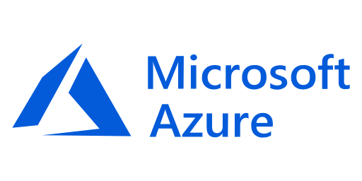
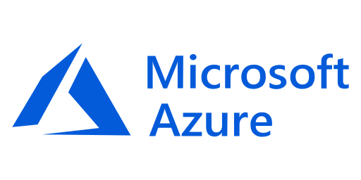
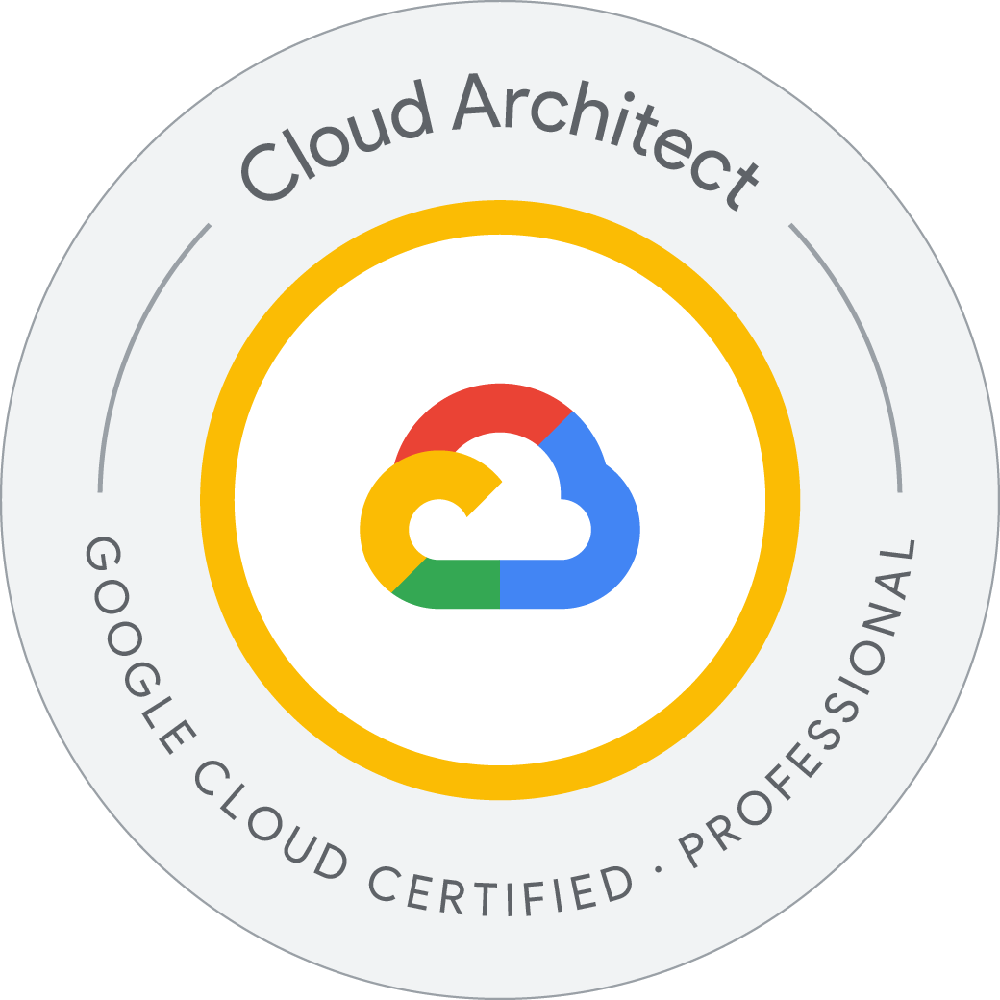
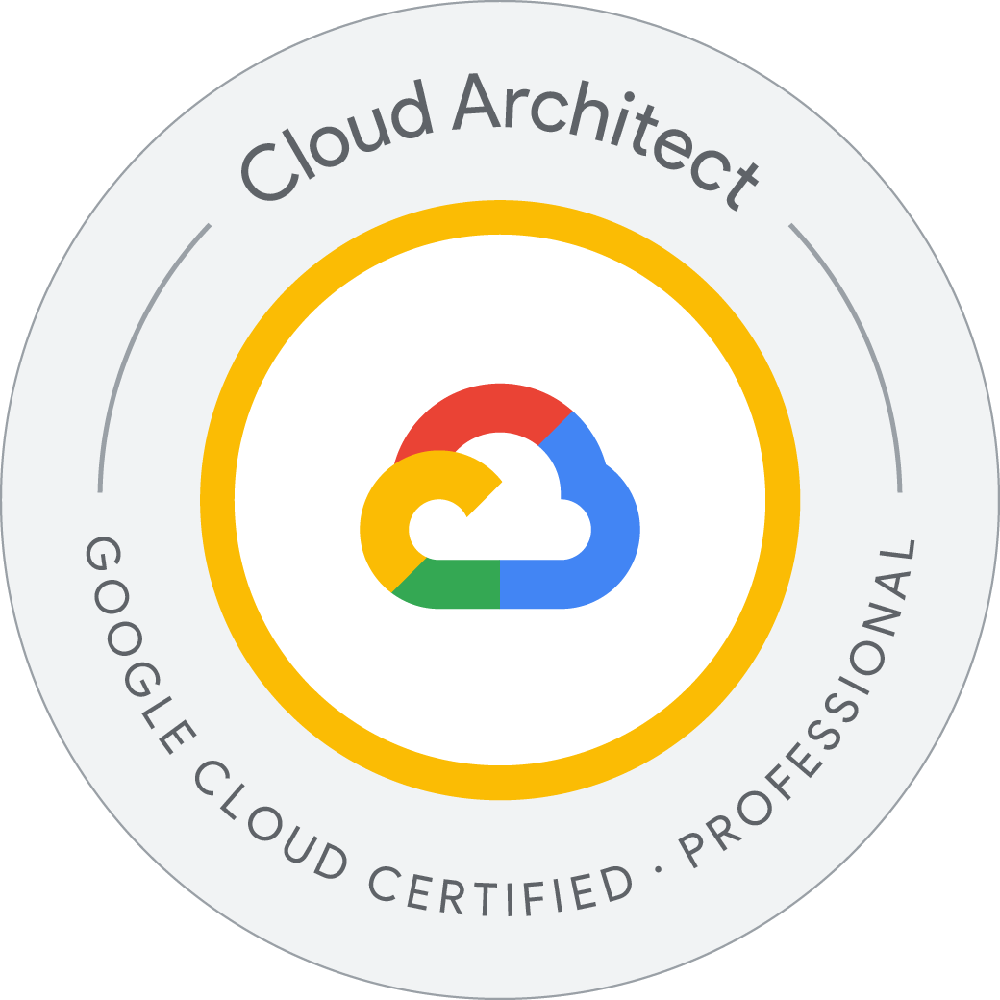

Visão Geral das Certificações TI em 2025
Aqui se encontram as certificações mais valorizadas. Envolvem cloud computing, segurança da informação, redes e arquiteturas híbridas/multicloud. Profissionais que dominam plataformas como Azure, Google Cloud e Cisco, além de especializações em segurança e DevOps, têm se destacado no mercado.
Tabela Comparativa de Certificações
| Certificação | Empresa / Plataforma | Nível / Categoria | Perfil ideal / Pré‑requisitos | Custo estimado | Formato / Idioma / Validade | Áreas de atuação |
|---|---|---|---|---|---|---|
| CCNA | Cisco | Associate / Networking | Iniciantes em redes, técnicos; noções de TCP/IP | ~ US$ 300 | Prova em centros autorizados; inglês (e outros de acordo com região) | Administrador de redes, suporte de infra‑estrutura |
| CCNP | Cisco | Professional / Routing, Switching, Segurança | Experiência intermediária em redes | ~ US$ 700 (core + concentração) | Prova em centros; idiomas conforme região | Engenharia de redes, projetos grandes, segurança |
| Azure Administrator Associate (AZ‑104) | Microsoft | Associate / Operações de Nuvem | Experiência básica com nuvem, conceitos de rede e segurança | ~ US$ 165 | Online ou presencial; múltiplos idiomas | Administração de Azure, suporte operacional |
| Azure Solutions Architect Expert (AZ‑305 / AZ‑104) | Microsoft | Expert / Arquitetura de Soluções | Experiência sólida em Azure, projetos técnicos | ~ US$ 165 por exame | Online ou presencial; validade conforme política Microsoft | Arquiteto de nuvem, consultoria, desenho de infraestruturas |
| Professional Cloud Architect | Google Cloud | Professional | Experiência em GCP, entendimento de arquitetura de nuvem | ~ US$ 200 | Prova online ou em centro; validade ~ 2 anos; idiomas variados | Arquiteto de soluções GCP, consultoria, liderança técnica |
Cisco
Certificações destacadas
- CCNA: nível associativo; ótimo para quem está começando em redes.
- CCNP: profissional / especialização em roteamento, switching ou segurança.
- CCIE: nível Expert, experiência extensa, prova teórica + prática.
Formato, custo, idioma
As provas Cisco podem ser feitas presencialmente ou em centros autorizados. O idioma principal é o inglês, embora algumas certificações possam estar disponíveis em outras línguas dependendo da localização. Custos variam bastante conforme o nível (ex: CCNA ~ US$ 300; exames mais avançados podem ultrapassar US$ 1.500 para laboratórios práticos).
Microsoft
 



Certificações destacadas
- AZ‑900 Azure Fundamentals: ideal para iniciantes ou gestores que querem entender noções de nuvem.
- AZ‑104 Azure Administrator Associate: para quem vai operar e manter recursos em Azure.
- Azure Solutions Architect Expert: para quem vai desenhar arquiteturas completas de soluções em Azure.
Formato, custo, idioma
Microsoft oferece exames online ou em centros de prova autorizados. Os idiomas variam — há suporte ao português do Brasil em muitas certificações. Custo típico para exames de associate e fundamentals ~ US$ 99‑165; níveis expert têm custo por exame adicional.
Google Cloud

 

Certificações destacadas
- Cloud Digital Leader: para quem quer entender os conceitos de nuvem do ponto de vista de negócio.
- Associate Cloud Engineer: para operar, implantar, monitorar projetos no GCP.
- Professional Cloud Architect: para arquitetos de solução, design de infra‑estrutura, integração de dados e segurança.
Formato, custo, idioma
Exames via centros autorizados ou online quando disponível. Validade geralmente de 2 anos para níveis profissionais. Idiomas variam conforme país/região; o custo estimado para certificações profissionais gira em torno de US$ 200.
Aprendizado Contínuo & Evolução na Carreira
Certificações são marcos importantes, mas devem estar integradas ao aprendizado prático, projetos reais e atualização constante. Seguem sugestões:
PLANO DE CARREIRA (curto,médio e longo prazo):
1. Onde Você Está? Autoconhecimento
Tudo começa com uma reflexão. Antes de planejar, é preciso se conhecer.
Pontos Fortes & Paixões: Identifique suas habilidades naturais e o que realmente te motiva.
Seu Propósito: Defina o que você quer construir profissionalmente. Qual é o seu objetivo de carreira?
2. Onde Você Quer Chegar? Metas & Ações
Um plano de carreira é uma estrada. Cada etapa tem um objetivo claro.
Curto Prazo (1-2 anos)
Foco: Construir a base.
O que fazer:
Aprenda algo novo: Domine uma ferramenta, tecnologia ou competência que o mercado exige.
Busque certificações: Valide seu conhecimento com um selo oficial.
Faça networking: Conecte-se com pessoas estratégicas da sua área.
Médio Prazo (3-5 anos)
Foco: Crescer e se especializar.
O que fazer:
Assuma novas responsabilidades: Busque a liderança em projetos ou equipes.
Invista em educação: Faça uma pós-graduação ou um MBA para se aprofundar.
Mude de cargo: Busque uma promoção para um nível acima.
Longo Prazo (5+ anos)
Foco: Ser referência e liderar.
O que fazer:
Seja um líder: Alcance um cargo de gerência ou diretoria.
Empreenda: Inicie seu próprio negócio.
Deixe um legado: Torne-se um mentor ou especialista reconhecido no seu campo.
3. Como Manter o Foco? Acompanhamento
Um plano só funciona se for acompanhado.
Revisite-o: Veja seu plano a cada 6 ou 12 meses e faça ajustes.
Peça feedback: Converse com mentores ou gestores para entender como você está indo.
Celebre as vitórias: Reconheça o seu progresso.1. Onde Você Está? Autoconhecimento
Tudo começa com uma reflexão. Antes de planejar, é preciso se conhecer.
Pontos Fortes & Paixões: Identifique suas habilidades naturais e o que realmente te motiva.
Seu Propósito: Defina o que você quer construir profissionalmente. Qual é o seu objetivo de carreira?
2. Onde Você Quer Chegar? Metas & Ações
Um plano de carreira é uma estrada. Cada etapa tem um objetivo claro.
Curto Prazo (1-2 anos)
Foco: Construir a base.
O que fazer:
Aprenda algo novo: Domine uma ferramenta, tecnologia ou competência que o mercado exige.
Busque certificações: Valide seu conhecimento com um selo oficial.
Faça networking: Conecte-se com pessoas estratégicas da sua área.
Médio Prazo (3-5 anos)
Foco: Crescer e se especializar.
O que fazer:
Assuma novas responsabilidades: Busque a liderança em projetos ou equipes.
Invista em educação: Faça uma pós-graduação ou um MBA para se aprofundar.
Mude de cargo: Busque uma promoção para um nível acima.
Longo Prazo (5+ anos)
Foco: Ser referência e liderar.
O que fazer:
Seja um líder: Alcance um cargo de gerência ou diretoria.
Empreenda: Inicie seu próprio negócio.
Deixe um legado: Torne-se um mentor ou especialista reconhecido no seu campo.
3. Como Manter o Foco? Acompanhamento
Um plano só funciona se for acompanhado.
Revisite-o: Veja seu plano a cada 6 ou 12 meses e faça ajustes.
Peça feedback: Converse com mentores ou gestores para entender como você está indo.
Celebre as vitórias: Reconheça o seu progresso.
Recursos Oficiais & Links Úteis
- Cisco Certifications (site oficial)
- CCNA – Cisco Learning Network
- Microsoft Learn – certificado Microsoft
- Microsoft Azure Certifications
- Google Cloud Certification